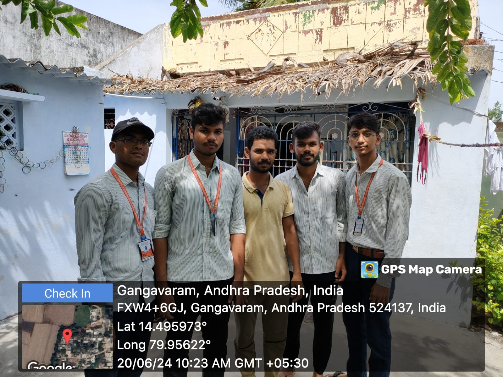

Survey Photos

.jpeg)
.jpeg)

Internet usage in villages has the potential to significantly improve the lives of rural communities by providing access to information, education and economic opportunities
Spreading of services at a wide range and decreasing of cost for data plans makes People easy to use internet
It is possible to level the playing the fields and give everyone the opportunity to participate in the digital economy
Overall internet Usage in village has the potential to bring about significant positive changes in the lives of rural communities
It is possible to become addicted to the internet leading to problems such as difficulty focusing on other tasks and social isolation
Set limits on your internet use and make an effort to disconnect from the internet on a regular bases
Education:Limited access to educational resources,e-learning and skill development
Healthcare:Difficulty accessing medical information, tele medicine, and health education
Economic Opportunities:reduced access to online marketplaces,and job portals
Communication:Limited means of staying in touch with family and friends
Education:Online classes, educational videos, interactive learning, access to vast educational resources
Healthcare:Tele medicine consultations, health information, digital health records
Economic Opportunities:E-commerce, online banking, job searches, skill development
Communication:Instant messaging,video calls,social media
The first week shows promising early signs of increased internet usage and improved digital engagement.
Further interventions and continuous monitoring are recommended to sustain and build on these initial gains.
By collecting and analyzing this data, you can gauge the early impact of your CSP project on internet usage in the villages and adjust your strategies accordingly for sustained improvement.